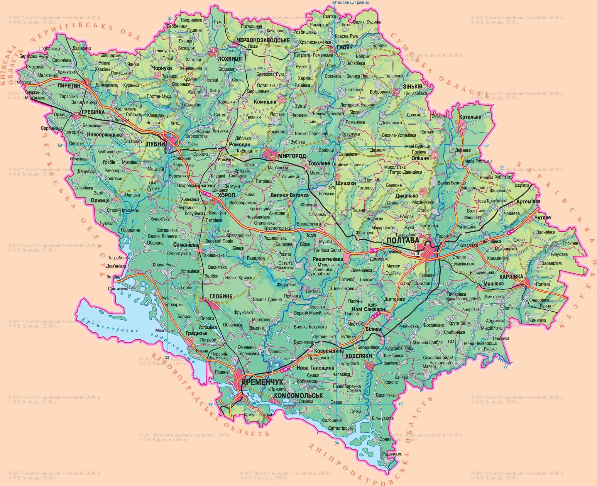

Геограафічні відомості

Цікаві географічні відомості про Полтаву:
Розташування:
- Місто лежить на Придніпровській низовині, по обидва береги річки Ворскла.
- Географічні координати: 49° 35' пн.ш., 34° 33' сх.д.
- Висота над р.м.: 140 м.
- Відстань до Києва: 302 км на схід.
Ландшафт:
- Місто розташоване на мальовничих пагорбах, що розділені річкою Ворскла.
- На північ від міста розташована Полтавська височина, на південь - Дніпровська низовина.
- У межах міста є кілька штучних водойм, найбільшою з яких є озеро Оріхове.
Клімат:
- Помірно-континентальний клімат з м'якою зимою та спекотним літом.
- Середня температура січня: -5°C.
- Середня температура липня: +20°C.
- Середня річна кількість опадів: 500 мм.
Цікаві факти:
- Полтава - одне з найстаріших міст України, засноване в 1174 році.
- Місто є історичним центром Полтавщини.
- У 1709 році під Полтавою відбулася Полтавська битва, яка стала поворотним моментом у Північній війні.
- У місті розташовано багато історичних та культурних пам'яток, таких як Іванова гора, Полтавський краєзнавчий музей, Полтавський ляльковий театр та інші.